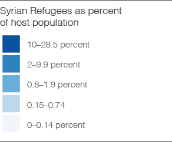

Since March of 2011, Syria has faced civil unrest leading to what the United Nations High Commissioner for Refugees (UNHCR) calls “the biggest humanitarian emergency of our era” (UNHCR). UNHCR reports that nearly 250,000 lives have been lost, roughly 6.6 million Syrians have been internally displaced, and over 4.7 million Syrians have fled the country to neighboring countries—Turkey, Jordan, Lebanon, and Iraq—and beyond to Europe. These numbers, however, only document registered refugees. The number of Syrians abroad is expected to be much higher.
The Syrian crisis is in its fifth year and western media has only recently publicized the flows of Syrian refugees. There were more media publications about the crisis in the month of September 2015 than all of 2011 and 2012. The question is why?
The crisis is now affecting Europe. The interactive map to the right shows the progression of refugees into Europe by month in 2015. Looking at Europe as a whole, the proportional circles increase dramatically throughout the year. There is also a noticeable increase in August and September. Germany and Sweden have taken in the most refugees by far.
Turn on the shaded choropleth.

As a percent of the host population, however, the number of refugees in Europe is less dramatic. Less than one percent of Germany's population consists of Syrian refugees. In contrast, Jordan's population has increased by a third and has significant effects on local populations. These findings beg the question: Is this really Europe's problem?
Data sources:
UNCHR Statistical Online Population Database
Icons by Aurélien Lemesre from the Noun Project